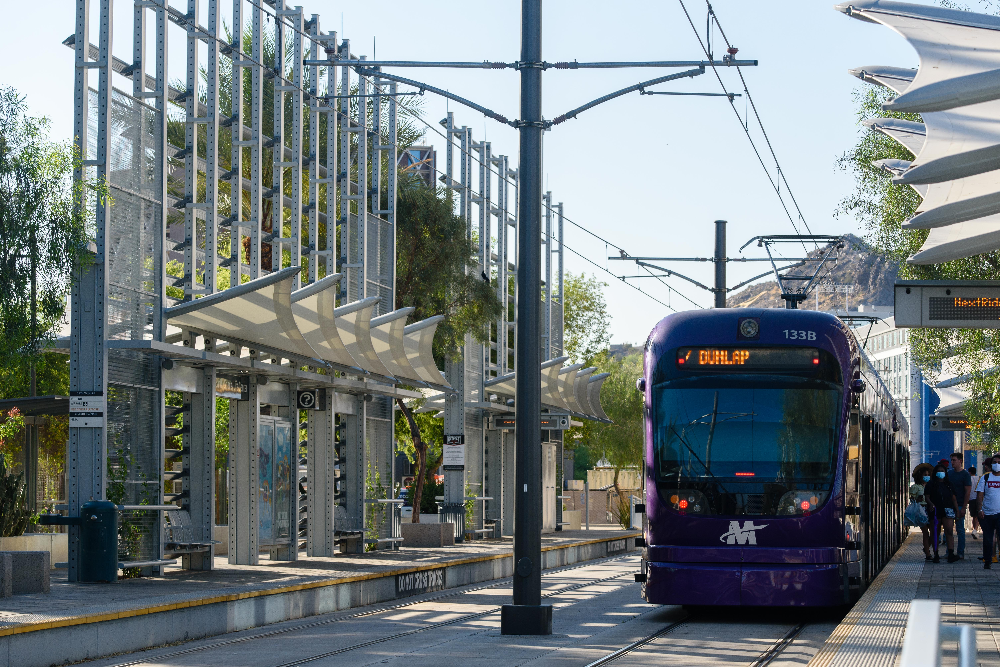
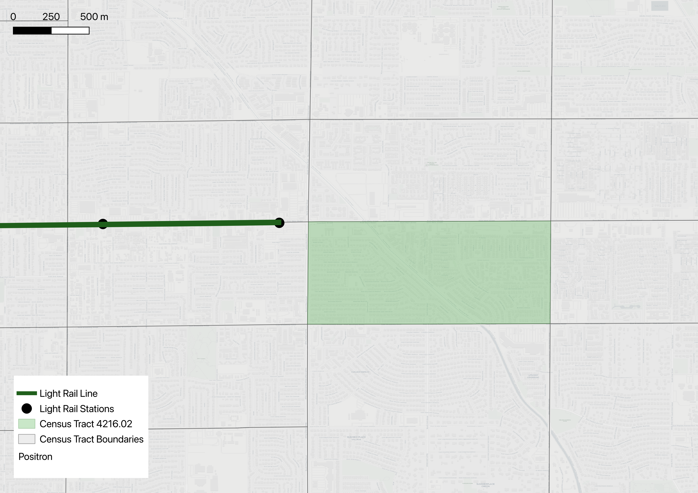
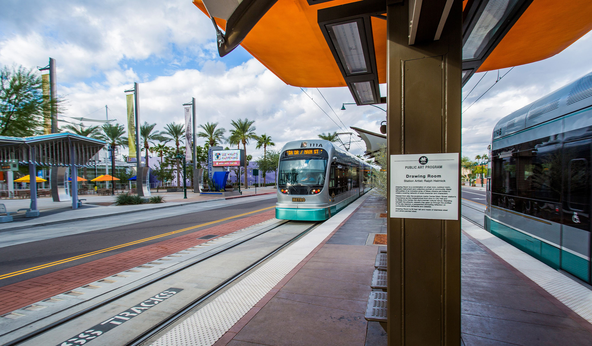
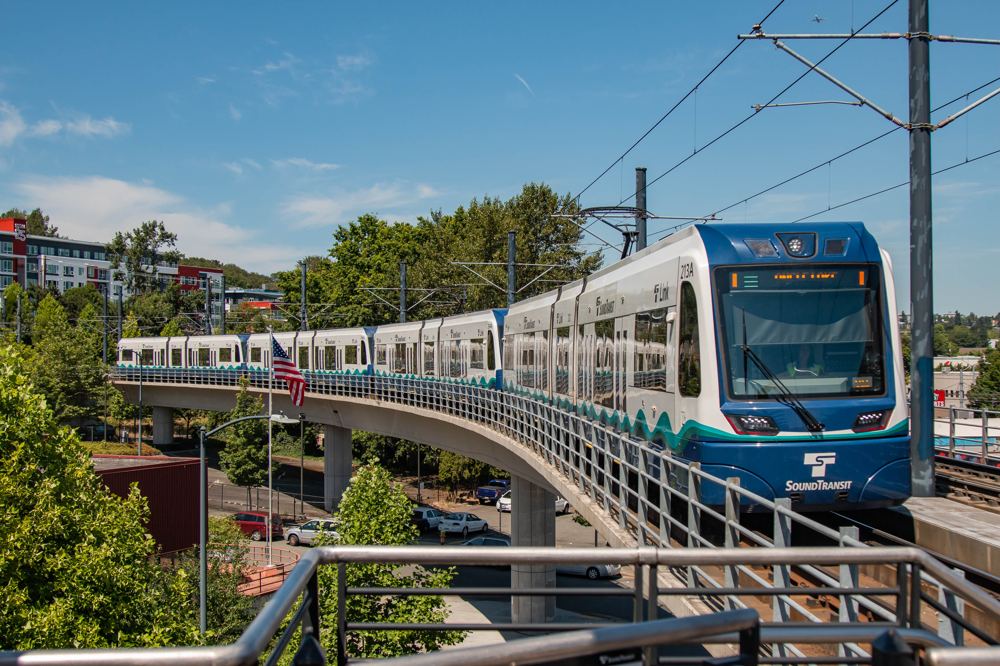
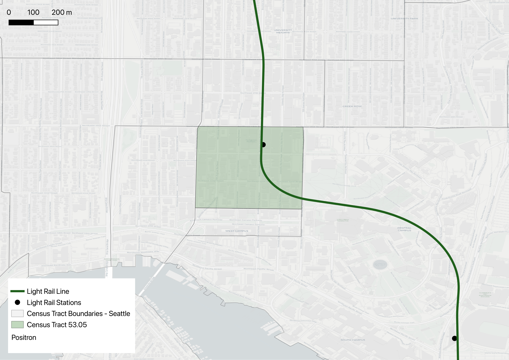
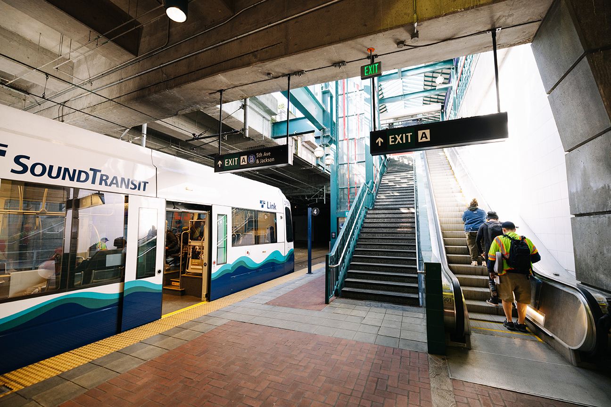
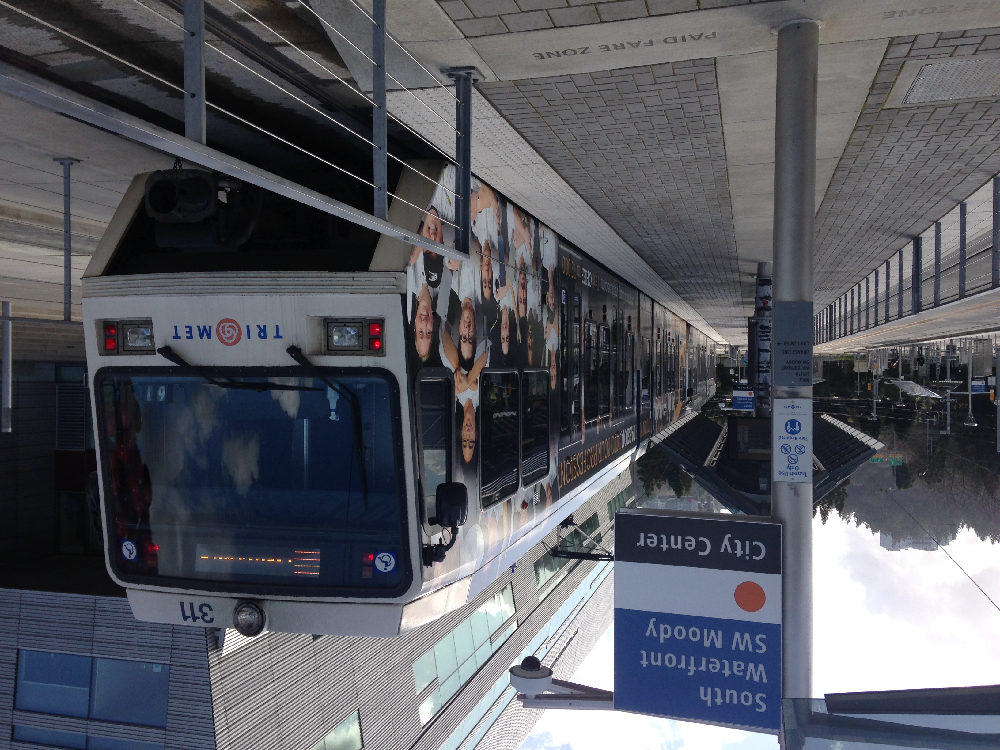
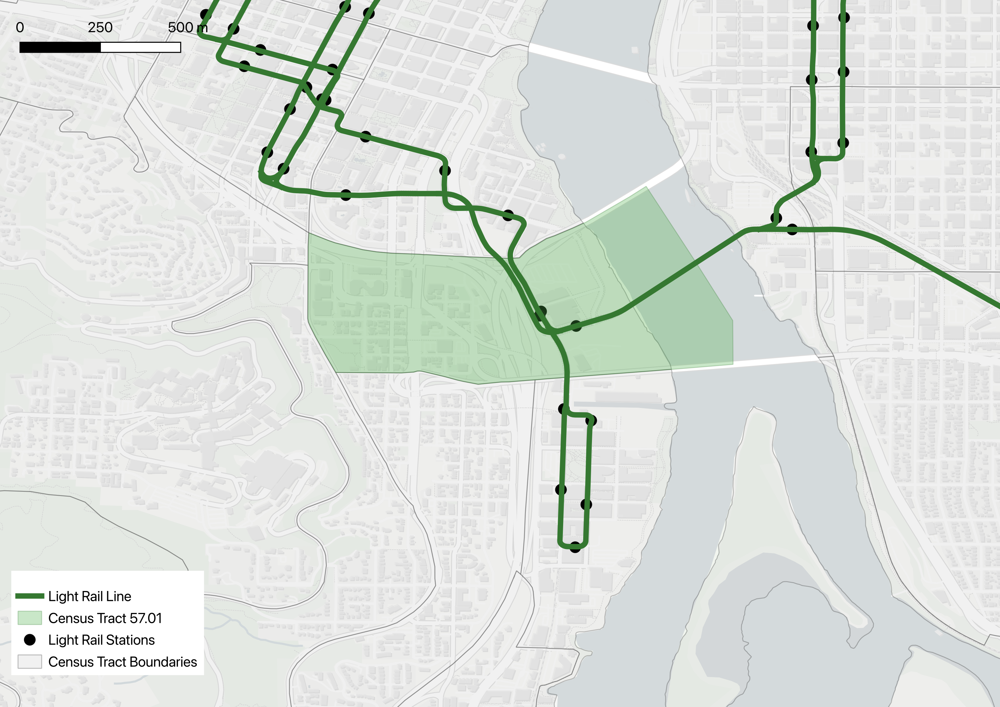
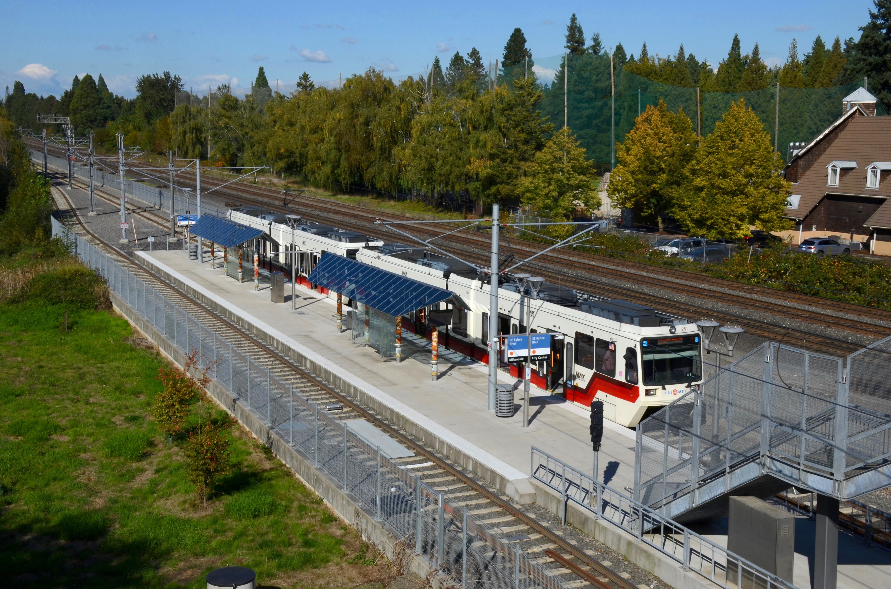
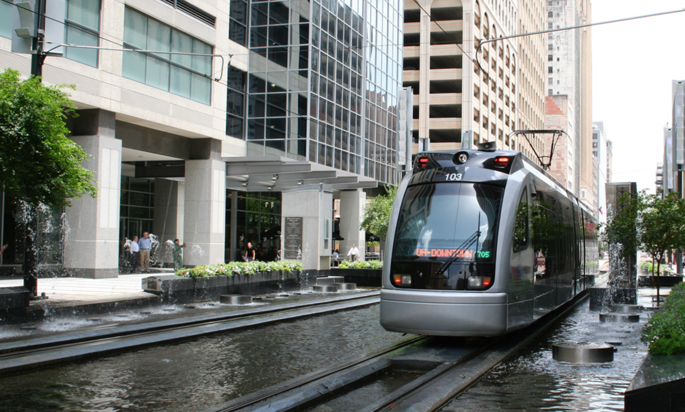

The Light Rail Effect
Light Rail Infrastructure And Rent Prices
19th & Glendale
As part of the Northwest Extension, 19th and Glendale opened on March 19th, 2016, as the first phase of the line’s development. The extension added 3.2 miles of track, which was estimated, upon announcement, to serve 5,000 riders a day. The adjacent tract, Census Tract 1067.01 in Maricopa County, has a median household income of $44,224. The region has an 84% occupancy rate. 24% of the population is in poverty. In the treated graph, the six years preceding the station’s opening show the median rent declining gradually, until the shift towards an increase began in 2015. Anticipation of the new infrastructure may have increased economic stimulus in the area, which could explain the increase, i.e anticipatory pricing. The advent of COVID-19, migration, and a broader metropolitan rent hike may also confound the census tract’s gradual rise. In the graph comparing the treated and control (Census Tract 1066), the movement is practically inverted, almost patently. This may indicate station-specific effects, but speculation doesn't confirm causal relationships.



Gilbert Rd / Main St



Country Club Dr / Main St



45th St / 15th Ave




Capitol Hill Station


South Waterfront / S Moody Station




SE Bybee Blvd Station


Coffee Plant / Second Ward


Leeland / Third Ward



Lockwood / Eastwood EB


Closing note
Use this final section for a conclusion, limitations, or data-source notes.